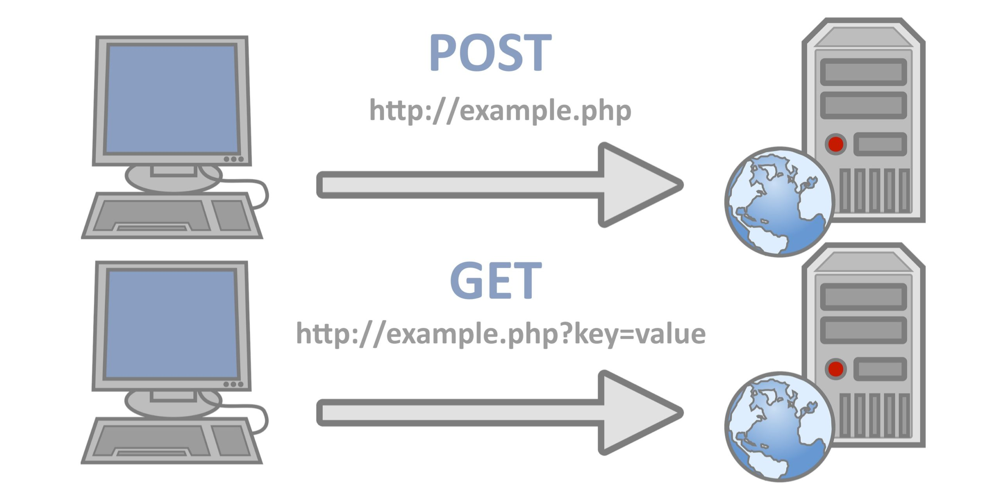

XMLHttpRequest 对象用于和服务器交换数据。
向服务器发送请求
如需将请求发送到服务器，我们使用 XMLHttpRequest 对象的 open() 和 send() 方法：
xmlhttp.open("GET","ajax_info.txt",true);
xmlhttp.send();
| 方法 |
描述 |
| open(method,url,async) |
规定请求的类型、URL 以及是否异步处理请求。
- method：请求的类型；GET 或 POST
- url：文件在服务器上的位置
- async：true（异步）或 false（同步）
|
| send(string) |
将请求发送到服务器。
|
GET 还是 POST？
与 POST 相比，GET 更简单也更快，并且在大部分情况下都能用。
然而，在以下情况中，请使用 POST 请求：
- 不愿使用缓存文件（更新服务器上的文件或数据库）
- 向服务器发送大量数据（POST 没有数据量限制）
- 发送包含未知字符的用户输入时，POST 比 GET 更稳定也更可靠

GET 请求
一个简单的 GET 请求：
实例
xmlhttp.open("GET","/try/ajax/demo_get.php",true);
xmlhttp.send();
尝试一下 »
在上面的例子中，您可能得到的是缓存的结果。
为了避免这种情况，请向 URL 添加一个唯一的 ID：
实例
xmlhttp.open("GET","/try/ajax/demo_get.php?t=" + Math.random(),true);
xmlhttp.send();
尝试一下 »
如果您希望通过 GET 方法发送信息，请向 URL 添加信息：
实例
xmlhttp.open("GET","/try/ajax/demo_get2.php?fname=Henry&lname=Ford",true);
xmlhttp.send();
尝试一下 »
POST 请求
一个简单 POST 请求：
实例
xmlhttp.open("POST","/try/ajax/demo_post.php",true);
xmlhttp.send();
尝试一下 »
如果需要像 HTML 表单那样 POST 数据，请使用 setRequestHeader() 来添加 HTTP 头。然后在 send() 方法中规定您希望发送的数据：
实例
xmlhttp.open("POST","/try/ajax/demo_post2.php",true);
xmlhttp.setRequestHeader("Content-type","application/x-www-form-urlencoded");
xmlhttp.send("fname=Henry&lname=Ford");
尝试一下 »
| 方法 |
描述 |
| setRequestHeader(header,value) |
向请求添加 HTTP 头。
- header: 规定头的名称
- value: 规定头的值
|
url - 服务器上的文件
open() 方法的 url 参数是服务器上文件的地址：
xmlhttp.open("GET","ajax_test.html",true);
该文件可以是任何类型的文件，比如 .txt 和 .xml，或者服务器脚本文件，比如 .asp 和 .php （在传回响应之前，能够在服务器上执行任务）。
异步 - True 或 False？
AJAX 指的是异步 JavaScript 和 XML（Asynchronous JavaScript and XML）。
XMLHttpRequest 对象如果要用于 AJAX 的话，其 open() 方法的 async 参数必须设置为 true：
xmlhttp.open("GET","ajax_test.html",true);
对于 web 开发人员来说，发送异步请求是一个巨大的进步。很多在服务器执行的任务都相当费时。AJAX 出现之前，这可能会引起应用程序挂起或停止。
通过 AJAX，JavaScript 无需等待服务器的响应，而是：
- 在等待服务器响应时执行其他脚本
- 当响应就绪后对响应进行处理
Async=true
当使用 async=true 时，请规定在响应处于 onreadystatechange 事件中的就绪状态时执行的函数：
实例
xmlhttp.onreadystatechange=function()
{
if (xmlhttp.readyState==4 && xmlhttp.status==200)
{
document.getElementById("myDiv").innerHTML=xmlhttp.responseText;
}
}
xmlhttp.open("GET","/try/ajax/ajax_info.txt",true);
xmlhttp.send();
尝试一下 »
您将在稍后的章节学习更多有关 onreadystatechange 的内容。
Async = false
如需使用 async=false，请将 open() 方法中的第三个参数改为 false：
xmlhttp.open("GET","test1.txt",false);
我们不推荐使用 async=false，但是对于一些小型的请求，也是可以的。
请记住，JavaScript 会等到服务器响应就绪才继续执行。如果服务器繁忙或缓慢，应用程序会挂起或停止。
注意：当您使用 async=false 时，请不要编写 onreadystatechange 函数 - 把代码放到 send() 语句后面即可：
实例
xmlhttp.open("GET","/try/ajax/ajax_info.txt",false);
xmlhttp.send();
document.getElementById("myDiv").innerHTML=xmlhttp.responseText;
尝试一下 » AJAX应用程序与浏览器和平台无关的！
AJAX应用程序与浏览器和平台无关的！